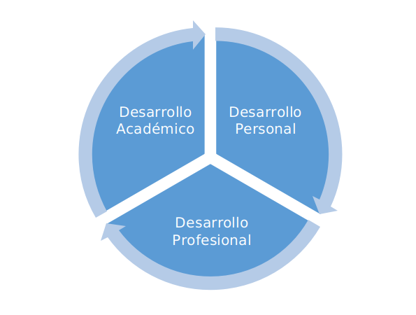

Semana 14 | EVALUACIÓN DE LOS TUTORADOS
Descripción
Evaluar el desarrollo de las habilidades de los tutorados para asignar la calificación del tutorado en el programa.
Pasos a seguir

Figura 1. Ejes fundamentales de la Tutoría
El eje de desarrollo personal se desarrollará de manera primordial en los primeros tres semestres de los programas educativos, mientras que la formación académica se enfoca en el conocimiento de las actividades, normativas y programas vigentes en el Instituto a lo largo de los seis primeros semestres. Finalmente, el desarrollo profesional se concentra en los dos últimos semestres para preparar a los estudiantes cuando inicien los procesos externos de servicio social y residencia profesional.
Desarrollo académico.
El Profesor-Tutor genera condiciones adecuadas para que el estudiante lleve con éxito el desarrollo de su carrera. En este ámbito en particular, se pueden mencionar las asistencias que el Tutor brinda en asuntos relacionados con la gestión de apoyos económicos (solicitud y renovación de becas), transportación (gestión de credenciales) y orientación en trámites ante autoridades escolares que incluyen el alta de los servicios de seguridad social y otros. No se puede descuidar el hecho de que el Tutor procura que el tránsito del alumno en la institución sea positivo y con todas las herramientas para lograr el éxito académico que se espera del estudiante.
Desarrollo personal.
Consiste en un conjunto de actividades y sesiones individuales que el Tutor diseña en forma especial con el propósito de mantener al alumno en una tarea continua de autorregulación. Esto generalmente se presenta cuando el estudiante atraviesa por un período crítico de incertidumbre o pasa por situaciones personales que hacen no sólo bajar su rendimiento en la escuela, sino abandonarla o caer en los extremos de la autodestrucción (alcoholismo, aislamiento, depresión, entre otros).
Para ello es importante que el Tutor aprenda estrategias de diagnóstico que le permitan detectar casos que superan su competencia, para poder canalizarlos con las instancias correspondientes. En este sentido, la comunicación con la Coordinación del Programa de Tutorías resulta fundamental para el caso de requerir canalizar al estudiante a una instancia externa de apoyo, por ejemplo.
Es importante precisar que en la Tutoría, no es prioritario y no forma parte de sus funciones:
- Examinar aspectos relacionados con las vivencias y actitudes de los estudiantes que no interfieren en su aprovechamiento escolar.
- Tratar problemas existenciales.
- Proporcionar servicios de consejería sentimental.
- Atender e involucrarse en asuntos personales, emocionales, afectivos o económicos de los estudiantes.
Desarrolo profecional
El Tutor, deberá estar consciente de que su tarea principal es estimular a aquellos estudiantes que pueden proyectarse como profesionales, en las ramas de la ingeniería en que se formen con altos niveles de competencia, por lo que el cuidado y atención que se le brinde al alumno someterá a prueba el prestigio académico del propio equipo docente y de la institución.